Theory
A simple differentiator circuit is obtained by interchanging the position of the resistor and capacitor in the basic integrator circuit. The ideal performance equation for the simple differentiator is readily derived from the usual ideal amplifier assumptions. Since the input signal is applied through a capacitor there is current flow to the amplifier summing point and a nonzero output voltage only when the input voltage changes. 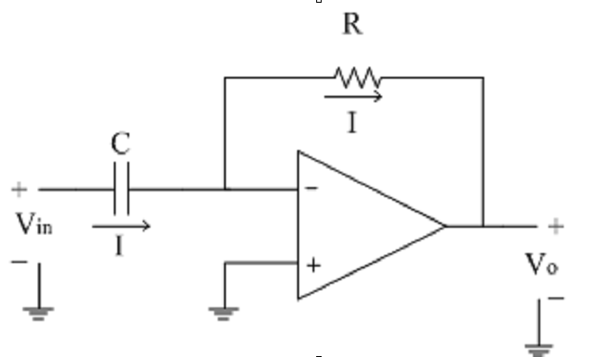 Assume current 'I' is flowing through capacitor C. It is given as 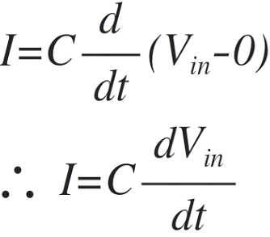 Since input current to the op-amp is zero, same current 'I' flows through resistance R as shown. It is given by 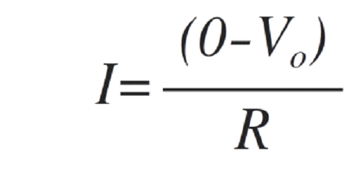 Equating both the above equations of 'I' we get, 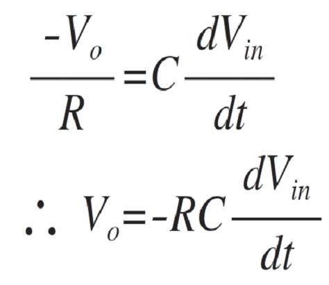 Thus, output voltage is nothing but time differentiation of the input signal and hence acting as differentiator. Here 'RC' is the time constant of the differentiator. Now let us see what is the response of the differentiator to the different types of input signals. 1)Vin = Step signal The step signal is defined as follows Vin (t)=A for t>0 Let the product RC = 1. The output voltage is given as 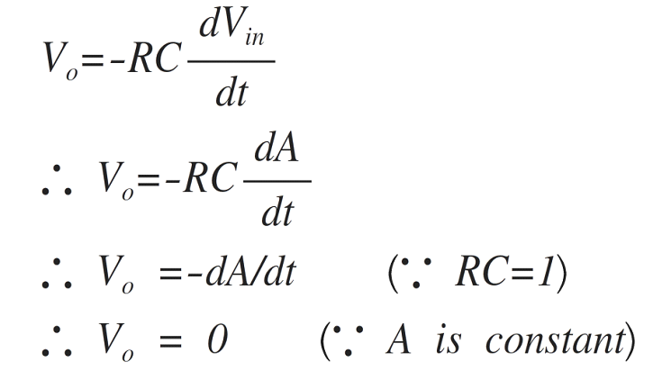 Practically the step input is taking some finite time to rise from 0 to magnitude A. Due to this small interval of time, the differentiator output is not zero; but appears in the form of spikes at t = 0. The input and output waveform is shown below. 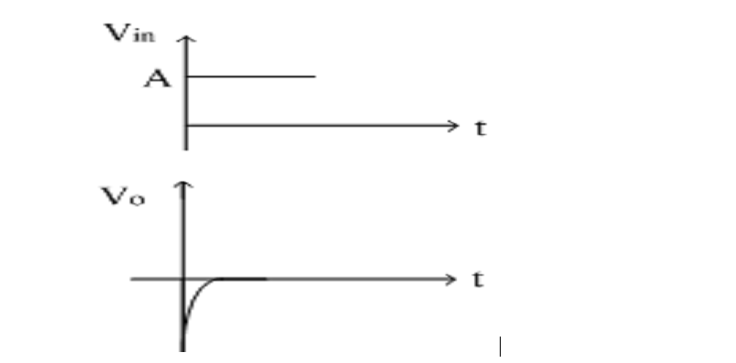 2)Vin = Square Wave The square wave is nothing but combination of positive and negative step signals. As seen in first case, the output of step signal is a spike. For positive step signal, a negative spike is obtained because it is inverting differentiator. Thus, for a square wave input, the output obtained is a spike waveform as shown in figure below. 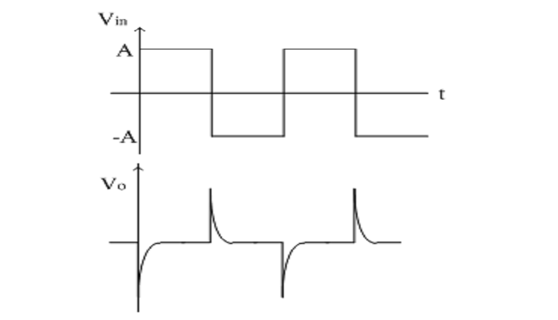 3)Vin = Sine Wave Let Vin=Vm sinωt 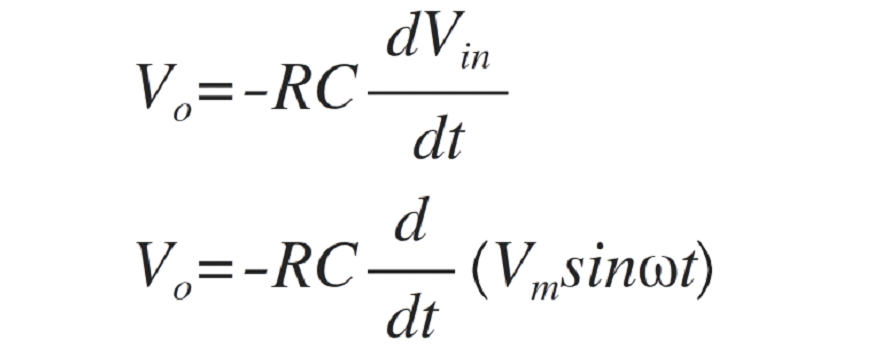 Assuming the time constant RC = 1 and taking the differentiation, we get 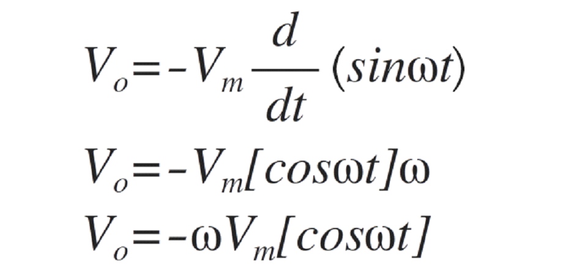 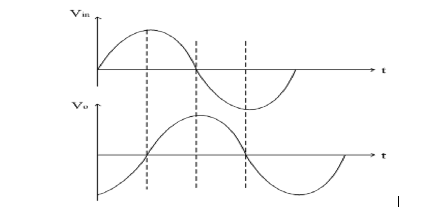 Frequency Response of ideal integrator: The voltage gain for the same is given as 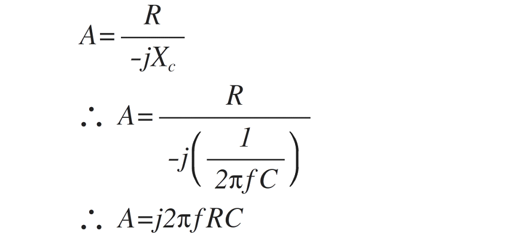 The magnitude of gain A is |A|=|2πfRC| Thus, the gain A is directly proportional to frequency f. At low frequency, the gain is also low. As frequency increases, gain also increases linearly at the rate of 20dB/decade. For dc input (f = 0) the gain is zero. Let, the frequency fa is defined as follows fa=1/2πRC Therefore the gain A is given as |A|=|f/fa | Thus When f < fa, the gain A is less than 1( i.e. negative) When f = fa, then the gain is 1 (i.e. 0dB) Thus the frequency fa is nothing but the 0 dB (or unity gain) frequency for differentiator. When f > fa, the gain A is increases linearly at the rate of 20dB/decade. The frequency response of ideal differentiator is shown in figure below. 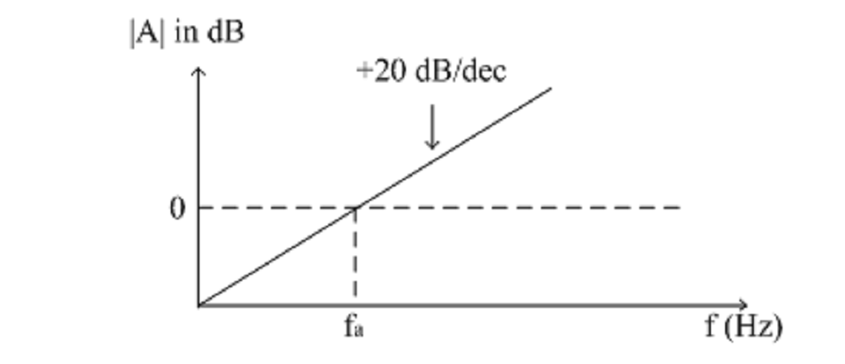